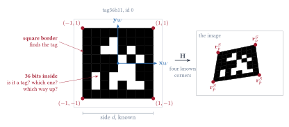
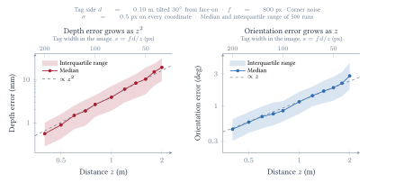
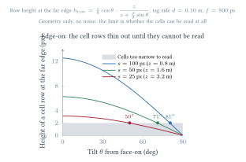

Pose of a fiducial marker from one image
From four pixel corners to the position and orientation of a printed tag, every step written out
1The problem
A square tag of known size is stuck to a body segment. One calibrated camera photographs it. The detector returns the pixel positions of the tag's four corners, in a known order. From those eight numbers, find where the tag is and which way it faces: its position and orientation in the camera frame.

Three frames are involved, with the deck's convention that a superscript names the frame a vector is expressed in:
| frame | what it is | vectors in it |
|---|---|---|
| \(W\) | the tag's own frame: origin at the tag centre, \(x_W, y_W\) along the edges, \(z_W\) out of the paper. For a tag the "world" frame of the camera slides is the tag itself. | \(\v{r}_P^{W}\), the corners, known: \((\pm d/2, \pm d/2, 0)\) |
| \(C\) | the camera frame: origin at the pinhole, \(z_C\) along the optical axis, out through the lens. | \(\v{r}_P^{C}\), unknown |
| \(S\) | the sensor frame, in pixels. | \(\v{r}_p^{S}\), the four detected corners, measured |
Unknowns
- \(\R_W^C\), the orientation of the tag frame in the camera frame: 3 numbers.
- \(\v{o}_W^C\), the position of the tag centre in the camera frame: 3 numbers.
Six in all: the pose.
Knowns
- \(\v{K}_f\), the intrinsic matrix, from calibration.
- \(d\), the side of the tag, from its data sheet.
- \(\v{r}_{p,i}^{S}\), the four pixel corners, from the detector, in a known order: 8 numbers.
The order of the corners matters, and it is the code inside the tag that supplies it: a bare square looks the same turned through \(90^\circ\), the bit pattern does not, so the detector can say which image corner is the \((-1,-1)\) corner of the tag.
2The camera model, with the scale written out
Take one point \(P\) at \(\v{r}_P^{W}\) in the tag frame. Its position in the camera frame is the rigid transformation
\[\v{r}_P^{C} = \R_W^C\,\v{r}_P^{W} + \v{o}_W^C, \qquad \v{r}_P^{C} = \m{x_P^C \\ y_P^C \\ z_P^C}, \tag{2.1}\]and the pinhole puts it on the sensor at
\[x_p^S = f_x\,\frac{x_P^C}{z_P^C} + s\,\frac{y_P^C}{z_P^C} + o_{xs}, \qquad y_p^S = f_y\,\frac{y_P^C}{z_P^C} + o_{ys}. \tag{2.2}\]This is the content of the pinhole slides: similar triangles give \(x^I = f\,x^C/z^C\), and the pixel conversion adds the scale factors and the offset to the principal point. The thing to hold on to is the division by \(z_P^C\). A point twice as far away lands half as far from the principal point. That division is where all the depth information lives, and it is what makes the equations nonlinear.
The slides package (2.2) as a matrix product by multiplying through by \(z_P^C\):
\[z_P^C \m{x_p^S \\ y_p^S \\ 1} = \underbrace{\m{f_x & s & o_{xs} \\ 0 & f_y & o_{ys} \\ 0 & 0 & 1}}_{\v{K}_f} \m{x_P^C \\ y_P^C \\ z_P^C}. \tag{2.3}\]Check the third row: it reads \(z_P^C \cdot 1 = z_P^C\), which is true and says nothing. The last row of \(\v{K}_f\) being \((0, 0, 1)\) is exactly what makes the third component of \(\v{K}_f\,\v{r}_P^C\) equal to the depth. The first two rows, divided by that third row, are (2.2) again.
Writing the rows of \(\v{K}_f\) as \(\kt{1}, \kt{2}, \kt{3} = (0, 0, 1)\), the two pixel coordinates are ratios:
\[x_p^S = \frac{\kt{1}\,\v{r}_P^{C}}{\kt{3}\,\v{r}_P^{C}} = \frac{\kt{1}\,\v{r}_P^{C}}{z_P^C}, \qquad y_p^S = \frac{\kt{2}\,\v{r}_P^{C}}{\kt{3}\,\v{r}_P^{C}} = \frac{\kt{2}\,\v{r}_P^{C}}{z_P^C}. \tag{2.5}\]Substituting (2.1) for \(\v{r}_P^C\) makes the unknown pose appear in both numerator and denominator. That is the equation each corner has to satisfy.
3A flat tag: the third column drops out
Write the rotation by its columns, \(\R_W^C = \m{\v{r}_1 & \v{r}_2 & \v{r}_3}\). Each column is one axis of the tag frame expressed in the camera frame: \(\v{r}_1\) is the direction of \(x_W\), \(\v{r}_2\) of \(y_W\), \(\v{r}_3\) of \(z_W\), the tag's normal. Then (2.1) reads
\[\v{r}_P^{C} = x_P^W\,\v{r}_1 + y_P^W\,\v{r}_2 + z_P^W\,\v{r}_3 + \v{o}_W^C. \tag{3.1}\]Every point on the tag has \(z_P^W = 0\), because the tag frame was put in the plane of the tag. So for the corners the \(\v{r}_3\) term vanishes:
\[\v{r}_i^{C} = x_i^W\,\v{r}_1 + y_i^W\,\v{r}_2 + \v{o}_W^C = \m{\v{r}_1 & \v{r}_2 & \v{o}_W^C}\m{x_i^W \\ y_i^W \\ 1}, \qquad i = 0, 1, 2, 3. \tag{3.2}\]Nothing has been approximated. The third column of the rotation is simply never multiplied by anything but zero, so it cannot be recovered from the tag's corners directly; it is recovered in §6 from the other two, because the three columns of a rotation are mutually perpendicular.
Put (3.2) into the camera model (2.4):
\[\lambda_i\,\v{r}_{p,i}^{S} = \v{K}_f \m{\v{r}_1 & \v{r}_2 & \v{o}_W^C} \v{q}_i, \qquad \v{q}_i \equiv \m{x_i^W \\ y_i^W \\ 1}. \tag{3.3}\]The product of the two matrices is a single \(3\times3\) matrix. Call it \(\v{H}\):
\[\boxed{\ \lambda_i\,\v{r}_{p,i}^{S} = \v{H}\,\v{q}_i, \qquad \v{H} = \v{K}_f \m{\v{r}_1 & \v{r}_2 & \v{o}_W^C}\ } \tag{3.4}\]\(\v{H}\) is the homography of the tag: the map from a position on the tag to a position in the image. It is the same object that Zhang's calibration builds for each photograph of the checkerboard. There the board's homographies are used to find \(\v{K}_f\); here \(\v{K}_f\) is known and the one homography is used to find the pose. Same algebra, run the other way.
For the corner coordinates themselves, with the tag frame at the centre,
\[\v{q}_0 = \m{-d/2 \\ -d/2 \\ 1}, \quad \v{q}_1 = \m{+d/2 \\ -d/2 \\ 1}, \quad \v{q}_2 = \m{+d/2 \\ +d/2 \\ 1}, \quad \v{q}_3 = \m{-d/2 \\ +d/2 \\ 1}. \tag{3.5}\]Any other choice of tag frame works, for instance the origin at one corner so that the corners are \(0, d\v{r}_1, d(\v{r}_1 + \v{r}_2), d\v{r}_2\), but the pose you get is the pose of the frame you chose, and the detector's convention is the centre.
4What one corner gives
Write (3.4) row by row for one corner, with \(\ht{1}, \ht{2}, \ht{3}\) the rows of \(\v{H}\) and \((x_i, y_i)\) short for the measured pixel position \((x_{p,i}^S, y_{p,i}^S)\):
\[\lambda_i\,x_i = \ht{1}\,\v{q}_i, \qquad \lambda_i\,y_i = \ht{2}\,\v{q}_i, \qquad \lambda_i = \ht{3}\,\v{q}_i. \tag{4.1}\]Three equations, but \(\lambda_i\) is an extra unknown that nobody asked for. The third equation tells us what it is, so substitute it into the first two:
\[x_i\,(\ht{3}\,\v{q}_i) = \ht{1}\,\v{q}_i, \qquad y_i\,(\ht{3}\,\v{q}_i) = \ht{2}\,\v{q}_i. \tag{4.2}\]Two equations per corner, with the depth gone. Each is a product of a measured pixel coordinate and a row of \(\v{H}\) on the left, a row of \(\v{H}\) on the right: linear in the nine entries of \(\v{H}\). To make that visible, stack the rows of \(\v{H}\) into one vector of nine unknowns,
\[\v{h} = \m{\tilde{\v{h}}_1 \\ \tilde{\v{h}}_2 \\ \tilde{\v{h}}_3} \in \mathbb{R}^9, \tag{4.3}\]and move everything in (4.2) to one side:
\[\m{\v{q}_i^\T & \v{0}^\T & -x_i\,\v{q}_i^\T \\ \v{0}^\T & \v{q}_i^\T & -y_i\,\v{q}_i^\T}\v{h} = \v{0}. \tag{4.4}\]This \(2\times9\) block is one corner's contribution. Its entries are the known tag coordinates in \(\v{q}_i\) and the measured pixels \(x_i, y_i\). Written out, the first row is
\[x_i^W h_{11} + y_i^W h_{12} + h_{13} - x_i\,x_i^W h_{31} - x_i\,y_i^W h_{32} - x_i\,h_{33} = 0. \tag{4.5}\]5Four corners: the system and its solution
Stack the four blocks (4.4):
\[\v{A}\,\v{h} = \v{0}, \qquad \v{A} = \m{\v{q}_0^\T & \v{0}^\T & -x_0\,\v{q}_0^\T \\ \v{0}^\T & \v{q}_0^\T & -y_0\,\v{q}_0^\T \\ & \vdots & \\ \v{q}_3^\T & \v{0}^\T & -x_3\,\v{q}_3^\T \\ \v{0}^\T & \v{q}_3^\T & -y_3\,\v{q}_3^\T} \in \mathbb{R}^{8\times9}. \tag{5.1}\]Eight equations, nine unknowns, and the right-hand side is zero. Three things follow.
The scale of \(\v{h}\) is free
If \(\v{h}\) solves (5.1) so does \(c\,\v{h}\) for any number \(c\). This is not a defect of the method; it is in the model. Multiply \(\v{H}\) by \(c\) in (3.4) and every \(\lambda_i\) absorbs it: the same pixels come out. So the pixels determine \(\v{H}\) only up to an overall factor, which is why "nine entries, eight unknowns": a direction in nine-dimensional space, not a point.
Eight equations are enough
A direction in \(\mathbb{R}^9\) has eight degrees of freedom, so eight independent equations pin it down. For four corners with no three in a line, which a square always satisfies, \(\v{A}\) has rank 8 and its null space is one line: the solution \(\v{h}\) is unique up to the factor \(c\). That is the whole reason a single tag suffices. The same system from a checkerboard with forty corners would have eighty rows and still only an eight-dimensional answer, hence its better accuracy.
Solving it: the null vector
Eight equations in nine unknowns always have a nonzero solution, noise or no noise: an \(8\times9\) matrix has a null space of dimension at least one. So the solution is simply
\[\v{h} = \text{a nonzero vector with } \v{A}\v{h} = \v{0}, \tag{5.2}\]reshaped into the three rows of \(\v{H}\). The singular value decomposition \(\v{A} = \v{U}\mathbf{\Sigma}\v{V}^\T\) delivers it: \(\v{A}\) has only eight singular values, and the ninth column of \(\v{V}\), the right singular vector with no singular value at all, is the null vector. That is what the code reads off, (5.3) below.
What noise does, then
It is worth pausing on what this means. Four noisy corners are still four points in the image, and some homography maps the tag's four corners onto them exactly, because four points in general position fix a homography and any four can be reached. So the \(\v{H}\) from (5.2) reproduces the measured corners perfectly; its reprojection error is zero by construction. Noise has not gone away. It has gone into \(\v{H}\) itself: the matrix that fits the corners is no longer of the form \(\v{K}_f\m{\v{r}_1 & \v{r}_2 & \v{o}_W^C}\) with perpendicular unit columns, and that is where it will be found in §6, in the Gram matrix before snapping, and paid for in §7.
The same system with more than four points is different. A pentagonal tag gives ten rows, a hexagonal one twelve, several tags printed on one flat sheet or a checkerboard's forty corners give many more, all against the same eight degrees of freedom, and then noise does make \(\v{A}\v{h} = \v{0}\) unsatisfiable. (The points must still lie in one plane; that is what let \(\v{r}_3\) drop out in §3. Tags on different faces of a block need the full \(3\times4\) projection instead.) The question becomes
\[\min_{\v{h}}\ \Vert\v{A}\v{h}\Vert^2 \quad\text{subject to}\quad \Vert\v{h}\Vert = 1, \tag{5.3}\]and the answer is the smallest singular vector: with \(\v{h} = \v{V}\v{a}\) for a unit \(\v{a}\), \(\Vert\v{A}\v{h}\Vert^2 = \sum_j \sigma_j^2 a_j^2\), smallest when all of \(\v{a}\) sits on the smallest \(\sigma_j\). For four corners the smallest singular value is exactly zero and (5.3) reduces to (5.2), so one recipe, "take the last right singular vector of \(\v{A}\)", covers both cases. That is why the code uses it.
6From H to the pose
We have \(\v{H}\) up to a factor, and we know from (3.4) what it is made of. Undo the intrinsics:
\[\v{M} \equiv \v{K}_f^{-1}\,\v{H} = c\m{\v{r}_1 & \v{r}_2 & \v{o}_W^C} = \m{\v{m}_1 & \v{m}_2 & \v{m}_3}. \tag{6.1}\]The three columns of \(\v{M}\) are the two axes and the origin of the tag, each multiplied by the same unknown \(c\). Five steps turn this into a pose.
- The scale. With exact data \(\v{m}_1 = c\,\v{r}_1\) and \(\v{m}_2 = c\,\v{r}_2\), and \(\v{r}_1, \v{r}_2\) are columns of a rotation matrix, hence unit vectors. So \(\Vert\v{m}_1\Vert = \Vert\v{m}_2\Vert = |c|\), and either norm gives the scale. This equality is not guaranteed by the solve; it is inherited from the structure of \(\v{H}\), and with noisy corners that structure is lost (§5): the null vector still fits the corners, but \(\v{K}_f^{-1}\v{H}\) is then no longer \(c\) times a matrix with orthonormal columns, and the two norms differ. There is no single right choice of \(c\) in that case; the mean is a convention, \[|c| = \tfrac{1}{2}\left(\Vert\v{m}_1\Vert + \Vert\v{m}_2\Vert\right), \tag{6.2}\] and whatever is chosen is renormalised in step 4 and discarded by the refinement of §7. The gap between the two norms is a diagnostic: it measures how far the four corners are from what a rigid flat square could have produced. This is also the step in which the known size of the tag does its work. The tag coordinates in \(\v{q}_i\) were written in metres, so \(\v{H}\) and hence \(\v{M}\) carry metres in their third column. Had the corners been written as \((\pm1, \pm1)\) instead, the same procedure would give \(\v{o}_W^C\) in units of \(d/2\). The camera cannot tell a small tag nearby from a big tag far away; the data sheet can.
- The sign. Dividing by \(|c|\) leaves \(\pm\m{\v{r}_1 & \v{r}_2 & \v{o}_W^C}\), both of which satisfy (5.1). The tag is in front of the camera, so its centre has positive depth: choose the sign that makes the third component of the third column positive, \(o_z > 0\).
- The missing column. The columns of a rotation are orthonormal and right-handed, so the third is the cross product of the first two: \[\v{r}_3 = \v{r}_1 \times \v{r}_2. \tag{6.3}\] This is the tag's normal, the one direction the flat tag's corners said nothing about.
- Tidying up. With exact data \(\m{\v{r}_1 & \v{r}_2 & \v{r}_3}\) is a rotation matrix. With noise \(\v{r}_1\) and \(\v{r}_2\) are not quite unit and not quite perpendicular, so the matrix is only nearly a rotation. Replace it by the nearest rotation matrix in the least-squares sense: with the singular value decomposition \(\m{\v{r}_1 & \v{r}_2 & \v{r}_3} = \v{U}\mathbf{\Sigma}\v{V}^\T\), \[\R_W^C = \v{U}\,\mathrm{diag}(1, 1, \det \v{U}\v{V}^\T)\,\v{V}^\T. \tag{6.4}\] The derivation is Appendix A; it is the three-dimensional version of the fit in Appendix A of the inverse-kinematics notes. The middle factor guards against the answer coming out as a reflection.
- The result. \(\R_W^C\) from (6.4) and \(\v{o}_W^C = \v{m}_3 / c\), with the sign from step 2. Six numbers, from eight pixel coordinates and a known side length.
Two checks are free. The dot product \(\v{r}_1\cdot\v{r}_2\) should be near zero and the two norms near each other; how far they are from that is a direct reading of how much the four corners disagree with a rigid, planar tag. The example in §8 prints the Gram matrix \(\R'^\T\R'\) before step 4 for exactly this purpose.
7Refining the pose
The pose from §6 is a closed-form answer, and it is the right answer for exact data. For noisy data it is only a good starting point, for two reasons that are visible in the derivation.
- The constraint that the first two columns of \(\v{M}\) are perpendicular unit vectors is ignored while solving and imposed afterwards. §5 fits the four noisy corners exactly with an \(\v{H}\) that has the wrong structure, and step 4 of §6 then snaps to the nearest rotation. But "nearest" there means nearest in the entries of a \(3\times3\) matrix, (A.1), which has nothing to do with pixels: the snapped pose no longer reproduces the corners, and nothing has chosen it to miss them as little as possible. The distance in pixels between where a corner was seen and where the model puts it, the reprojection error, is what one actually cares about, and the closed form never looks at it.
- With more than four points the same objection applies one step earlier: (5.3) minimises \(\Vert\v{A}\v{h}\Vert\), and each row of \(\v{A}\v{h}\) is a pixel equation multiplied through by \(\lambda_i\), (4.2), so corners at different depths are weighted differently and the quantity minimised is again not the reprojection error.
The remedy is the same one the constrained inverse-kinematics notes use in their section 9: write the error that matters and minimise it directly by Gauss–Newton, starting from the closed-form pose.
\[E(\R, \v{o}) = \sum_{i=0}^{3} \left\Vert \mathbf{\pi}\!\left(\v{K}_f,\ \R\,\v{r}_i^{W} + \v{o}\right) - \m{x_i \\ y_i}\right\Vert^2, \tag{7.1}\]where \(\mathbf{\pi}\) is the pinhole map (2.2), depth division included. The six unknowns are handled as a small rotation vector \(\v{w}\) applied on the left of the current estimate, \(\R \leftarrow \R(\v{w})\,\R\), and a shift of \(\v{o}\); after each step the rotation is exactly a rotation, so nothing has to be tidied. Each iteration linearises the eight residuals in the six parameters, solves the \(8\times6\) least-squares problem for the step, and applies it. In the example the Jacobian is taken by finite differences, one parameter at a time, so that the code shows nothing but "nudge a parameter, see how the pixels move".
The example in §8 runs both: the closed form alone, then the closed form followed by refinement, and repeats the comparison five hundred times with fresh noise. The refinement reduces the orientation error by about a factor of five. Any detector meant for measurement does this, or something equivalent; the closed form is how it finds the neighbourhood of the answer.
8The worked example
A camera with focal length 800 px and principal point at \((640, 360)\), a tag of side \(d = 0.1\) m turned \(35^\circ\) about a skew axis and placed 0.8 m in front of the camera. The script projects the four corners with (2.1) and (2.2), then forgets the pose and recovers it by §5–§7. Then it does the same with half a pixel of noise on every corner coordinate.
import numpy as np
np.set_printoptions(precision=4, suppress=True)
# ---- 1. the set-up -----------------------------------------------------------
K = np.array([[800.0, 0.0, 640.0], # f_x, skew, principal point (pixels)
[ 0.0, 800.0, 360.0], # f_y
[ 0.0, 0.0, 1.0]])
d = 0.10 # tag side, metres
def rotation(axis, deg):
"""Rotation matrix for an angle about a unit axis (Rodrigues' formula)."""
k = np.asarray(axis, float); k /= np.linalg.norm(k)
a = np.radians(deg)
Kx = np.array([[0, -k[2], k[1]], [k[2], 0, -k[0]], [-k[1], k[0], 0]])
return np.eye(3) + np.sin(a) * Kx + (1 - np.cos(a)) * Kx @ Kx
R_true = rotation([1.0, 0.6, 0.2], 35.0) # tag tilted 35 degrees about a skew axis
o_true = np.array([0.10, -0.05, 0.80]) # tag centre 0.8 m in front, a little right and up
# the four corners in the tag's own frame: (+-d/2, +-d/2, 0), in the detector's order
corners_W = (d / 2) * np.array([[-1, -1, 0], [1, -1, 0], [1, 1, 0], [-1, 1, 0]], float)
def project(K, R, o, X_W):
"""Pixel coordinates of world points X_W (rows), with the depth division done explicitly."""
X_C = X_W @ R.T + o # r^C = R r^W + o, one row per point
uvw = X_C @ K.T # K r^C: (f_x X + s Y + c_x Z, f_y Y + c_y Z, Z)
lam = uvw[:, 2] # the third row is Z, the depth -- that is lambda
return uvw[:, :2] / lam[:, None], lam
pix, lam = project(K, R_true, o_true, corners_W)def build_A(corners_W, pix):
"""Two rows per corner: [q^T 0^T -x q^T ; 0^T q^T -y q^T] h = 0, q = (x_W, y_W, 1)."""
rows = []
for (xw, yw, _), (x, y) in zip(corners_W, pix):
q = np.array([xw, yw, 1.0])
rows.append(np.concatenate([q, np.zeros(3), -x * q]))
rows.append(np.concatenate([np.zeros(3), q, -y * q]))
return np.array(rows)
# ---- 3. solve for H up to scale ---------------------------------------------
def solve_H(A):
"""The h that makes A h as small as possible with |h| = 1: the last right singular vector."""
_, S, Vt = np.linalg.svd(A)
return Vt[-1].reshape(3, 3), Sdef pose_from_H(K, H):
M = np.linalg.solve(K, H) # K^{-1} H = c [r1 r2 o]
c = (np.linalg.norm(M[:, 0]) + np.linalg.norm(M[:, 1])) / 2 # unit columns fix the scale
M = M / c
if M[2, 2] < 0: # the tag must be in front of the camera: o_z > 0
M = -M
r1, r2, o = M[:, 0], M[:, 1], M[:, 2]
r3 = np.cross(r1, r2) # the column that z_W = 0 removed
R_approx = np.column_stack([r1, r2, r3])
U, _, Vt = np.linalg.svd(R_approx) # nearest rotation (polar decomposition)
R = U @ np.diag([1, 1, np.linalg.det(U @ Vt)]) @ Vt
return R, o, R_approxdef refine(K, R, o, corners_W, pix, iters=10):
"""Gauss-Newton on the reprojection error, starting from the closed-form pose.
The six unknowns are a small rotation (vector w, applied as R <- R(w) R) and
a shift of o. The Jacobian is taken by finite differences, so there is no
hidden algebra: each column is 'how much do the eight pixel coordinates
move when this one parameter moves a little'."""
eps = 1e-6
for _ in range(iters):
res = (project(K, R, o, corners_W)[0] - pix).ravel() # 8 residuals, pixels
J = np.zeros((8, 6))
for j in range(6):
w, do = np.zeros(3), np.zeros(3)
if j < 3: w[j] = eps
else: do[j - 3] = eps
Rj = rotation(w, np.degrees(eps)) @ R if j < 3 else R
res_j = (project(K, Rj, o + do, corners_W)[0] - pix).ravel()
J[:, j] = (res_j - res) / eps
step = np.linalg.lstsq(J, -res, rcond=None)[0] # least-squares step
if np.linalg.norm(step[:3]) > 0:
R = rotation(step[:3], np.degrees(np.linalg.norm(step[:3]))) @ R
o = o + step[3:]
return R, odef run(pix, label):
print("==== %s ====" % label)
A = build_A(corners_W, pix)
H, S = solve_H(A)
print("singular values of A:", S)
R, o, R_approx = pose_from_H(K, H)
print("recovered o^C_W :", o, " true:", o_true)
print("recovered R^C_W :\n", R)
print("before snapping, R'^T R' =\n", R_approx.T @ R_approx)
print("rotation error : %.4f deg" % angle_between(R_true, R))
print("position error : %.2f mm" % (1000 * np.linalg.norm(o - o_true)))
pix_hat, _ = project(K, R, o, corners_W)
print("reprojection error: %.3f px (RMS)" % np.sqrt(np.mean((pix_hat - pix) ** 2)))
R2, o2 = refine(K, R, o, corners_W, pix)
pix_hat2, _ = project(K, R2, o2, corners_W)
print("after refinement : rotation error %.4f deg, position error %.2f mm, reprojection %.3f px"
% (angle_between(R_true, R2), 1000 * np.linalg.norm(o2 - o_true),
np.sqrt(np.mean((pix_hat2 - pix) ** 2))))
print()
if __name__ == "__main__":
print("pixel corners (x, y) and their depths lambda:")
for p, l in zip(pix, lam):
print(" (%8.2f, %8.2f) lambda = %.4f m" % (p[0], p[1], l))
print()
run(pix, "exact corners")
rng = np.random.default_rng(1)
run(pix + rng.normal(0, 0.5, pix.shape), "corners with 0.5 px noise")
# the same experiment repeated, to see what is typical rather than one draw
e_closed, e_refined = [], []
for _ in range(500):
pn = pix + rng.normal(0, 0.5, pix.shape)
H, _ = solve_H(build_A(corners_W, pn))
R, o, _ = pose_from_H(K, H)
e_closed.append(angle_between(R_true, R))
e_refined.append(angle_between(R_true, refine(K, R, o, corners_W, pn)[0]))
print("==== 500 repeats at 0.5 px noise: rotation error ====")
print("closed form : median %.2f deg, 90th percentile %.2f deg" % (np.median(e_closed), np.percentile(e_closed, 90)))
print("refined : median %.2f deg, 90th percentile %.2f deg" % (np.median(e_refined), np.percentile(e_refined, 90)))python3 fiducial_pose.py, as produced when this page was builtpixel corners (x, y) and their depths lambda:
( 694.35, 256.47) lambda = 0.7882 m
( 795.84, 271.19) lambda = 0.7617 m
( 784.32, 361.98) lambda = 0.8118 m
( 689.26, 345.26) lambda = 0.8383 m
==== exact corners ====
singular values of A: [1611.0218 80.6179 79.8549 1.9969 0.1496 0.1 0.0082
0.0056]
recovered o^C_W : [ 0.1 -0.05 0.8 ] true: [ 0.1 -0.05 0.8 ]
recovered R^C_W :
[[ 0.9483 -0.0194 0.3167]
[ 0.1745 0.8657 -0.4693]
[-0.265 0.5003 0.8243]]
before snapping, R'^T R' =
[[ 1. -0. -0.]
[-0. 1. 0.]
[-0. 0. 1.]]
rotation error : 0.0000 deg
position error : 0.00 mm
reprojection error: 0.000 px (RMS)
after refinement : rotation error 0.0000 deg, position error 0.00 mm, reprojection 0.000 px
==== corners with 0.5 px noise ====
singular values of A: [1611.352 80.6175 79.8866 1.9969 0.15 0.1 0.0078
0.0057]
recovered o^C_W : [ 0.1003 -0.0503 0.8032] true: [ 0.1 -0.05 0.8 ]
recovered R^C_W :
[[ 0.9275 -0.019 0.3735]
[ 0.1803 0.8977 -0.4021]
[-0.3276 0.4402 0.836 ]]
before snapping, R'^T R' =
[[ 1.0416 -0.0217 -0. ]
[-0.0217 0.9592 0. ]
[-0. 0. 0.9987]]
rotation error : 5.2662 deg
position error : 3.27 mm
reprojection error: 1.112 px (RMS)
after refinement : rotation error 0.7912 deg, position error 0.46 mm, reprojection 0.216 px
==== 500 repeats at 0.5 px noise: rotation error ====
closed form : median 5.15 deg, 90th percentile 9.42 deg
refined : median 1.02 deg, 90th percentile 1.79 deg
Reading the output against the derivation:
- The four depths \(\lambda_i\) differ, 0.76 m to 0.84 m, because the tag is tilted; that spread is the foreshortening of §4.
- In both runs \(\v{A}\) has eight nonzero singular values and the ninth right singular vector is an exact null vector, as §5 said it must be. With exact corners that null vector is the true \(\v{H}\): the pose comes back to machine precision, the Gram matrix before snapping is the identity, and refinement has nothing to do.
- With half a pixel of noise the null vector still fits the four corners exactly, but it is no longer the right kind of matrix. The Gram matrix shows what the corners said: the two axes came out with lengths \(\sqrt{1.04}\) and \(\sqrt{0.96}\) and a dot product of \(-0.02\), far from a rigid square. Snapping to a rotation gives a pose that is off by about \(5^\circ\) in orientation and 3 mm in position, and that pose puts the corners a pixel away from where they were seen. Refinement brings the reprojection down to the noise level and the orientation error to about \(1^\circ\).
- Five hundred repeats say the single draw was typical: a median of \(5^\circ\) for the closed form against \(1^\circ\) refined, with 90% of trials under \(9^\circ\) and \(2^\circ\) respectively.
Half a pixel is an ordinary corner-detection error, and the tag here spans only about a hundred pixels. The sensitivity is real, and it is why tags are used large, close, and refined.
9What this says about using tags
Everything a tag can and cannot do for movement tracking is in the algebra above.
- Depth comes from apparent size. Step 1 of §6 recovers distance from how large the tag appears against how large it is. The apparent size shrinks as \(1/z\), so a fixed error in pixels becomes a depth error that grows with the square of the distance. Doubling the distance quadruples the depth uncertainty, for the same corner accuracy.
- Tilt comes from foreshortening. The orientation is read from how the far edge is shorter than the near one, (4.2). For a tag facing the camera squarely the four corners are nearly a square and small tilts change the picture very little, so orientation about the in-plane axes is least certain when the tag looks best. At very oblique angles the opposite happens: one of \(\v{m}_1, \v{m}_2\) becomes short and the corresponding axis is poorly determined, and the detector loses the border altogether beyond roughly \(70^\circ\) off-axis.
- Four points is the minimum. §5 showed eight equations for eight unknowns with no redundancy; every pixel error goes straight into the pose. More corners would average it out, which is why a checkerboard calibrates well and why, for tracking, several tags on one rigid segment are treated as one target with their relative poses fixed.
- Refine, always. §7. The closed form is where you start, not where you stop.
- One camera, no correspondence problem. Against the marker clusters of the earlier sections: no triangulation, no second camera to calibrate against the first, and no question of which image blob is which marker, because the tag's code names it. The price is the sensitivity above and the need for the tag to be seen flat enough to decode.
Flat tags on a curved limb also violate the model in a way nothing here corrects: the tag rides on skin, and the soft-tissue artefact of the inverse-kinematics notes applies to it as it does to any other marker.
The four limits, in figures
The statements above are made concrete on the slides with four figures, reproduced here. Two come from a deliberately minimal simulation, make_limit_data.py in this folder: the tag's four corners are projected through the camera model of §2, each coordinate is given 0.5 px of Gaussian noise, the pose is recovered with the closed form and refinement of §5–§7, and the median and interquartile range of 500 runs are written to data/limit-distance.csv and data/limit-headon.csv in the module folder, with the fitted constants of the scaling laws in data/limit-fits.tex. The other two are geometry alone. All four are pgfplots or TikZ figures in the module's tikz/ folder, drawn from those files; the camera has \(f = 800\) px and the tag \(d = 0.1\) m throughout.

tikz/limit-distance.tex). Tag tilted 30° from face-on, 0.4 m to 2 m. Depth error follows \(z^2\) and orientation error follows \(z\): both are the corner noise \(\sigma\) scaled by the tag's size in the image, \(s = fd/z\), once for orientation and twice for depth. Depth from one camera is the stereo triangle with the tag's side as baseline.
tikz/limit-headon.tex). Tag at 0.8 m, 100 px wide, tilted 0° to 50°. Tilt is read from the ratio \(h/s = \cos\theta\) of the tag's height to its width in the image; the sensitivity of that ratio to tilt is \(\sin\theta\), zero at face-on, and the error is the noise divided by the sensitivity, \(\sigma/(s\sin\theta)\), the dashed line. This is Module 1's rule for noise referred to the measurand, applied to a tag used as a tilt sensor.
tikz/limit-oblique.tex). Geometry only. The tilt estimate keeps improving as the tag turns; what gives out is reading the bits. The rows of cells are foreshortened by \(\cos\theta\), and the far rows are also farther away by \(\tfrac{d}{2}\sin\theta\), so a far-edge row is \(h_{\rm row} = \tfrac{s}{8}\cos\theta \cdot z/(z + \tfrac{d}{2}\sin\theta)\) px high. Below about 2 px, twice a typical lens blur, a sample cannot be placed inside a cell and the code is not read: near 80° for a 100 px tag, 70° for 50 px, 50° for 25 px.
tikz/blur-images.tex, pixels from make_blur_pixels.py). A 32 px tag, 4 px per cell, moved sideways during the exposure by \(b = vT_{\rm exp}f/z\) pixels. Every edge becomes a ramp \(b\) px long. A bit is read by sampling the centre of its cell: at half a cell of smear the centre is still clean; at one cell the ramps meet at the centre; at two cells a black cell's centre averages as much white neighbour as black, and the code is gone while the border is still found.10Sources and further reading
The claims in these notes rest on the derivations and the worked example above. The list is divided into sources, works read and relied on, and further reading, pointers to where a topic is treated in depth, offered without any claim about what they conclude.
Sources
- Olson, E. (2011). AprilTag: A robust and flexible visual fiducial system. Proc. IEEE International Conference on Robotics and Automation, 3400–3407. — the tag design, the code book and its accuracy (§1, §9).
- Wang, J. & Olson, E. (2016). AprilTag 2: Efficient and robust fiducial detection. Proc. IEEE/RSJ International Conference on Intelligent Robots and Systems. — the detector that delivers the four ordered corners these notes start from (§1).
Further reading
- Zhang, Z. (2000). A flexible new technique for camera calibration. IEEE Transactions on Pattern Analysis and Machine Intelligence, 22, 1330–1334. — on the planar homography and its decomposition (§3, §6), run in the calibration direction.
- Hartley, R. & Zisserman, A. (2004). Multiple View Geometry in Computer Vision, 2nd ed. Cambridge University Press. — on estimating a homography from point correspondences, the normalisation of §5, and algebraic versus reprojection error (§5, §7).
- Horn, B. K. P. (1987). Closed-form solution of absolute orientation using unit quaternions. Journal of the Optical Society of America A, 4, 629–642. — on the nearest rotation matrix (§6, Appendix A).
- Nocedal, J. & Wright, S. J. (2006). Numerical Optimization, 2nd ed. Springer. — on Gauss–Newton and least squares (§7).
AAppendix A: the nearest rotation
Step 4 of §6 asks: given a \(3\times3\) matrix \(\R'\) that is almost a rotation, which rotation \(\R\) is closest to it? Closest in the least-squares sense, summing the squares of all nine entry differences:
\[\R = \arg\min_{\R^\T\R = \v{I},\ \det\R = 1}\ \Vert \R - \R' \Vert_F^2. \tag{A.1}\]Expand the square. \(\Vert\R - \R'\Vert_F^2 = \Vert\R\Vert_F^2 + \Vert\R'\Vert_F^2 - 2\,\mathrm{tr}(\R^\T\R')\). The first term is 3 for any rotation and the second does not involve \(\R\), so minimising (A.1) is the same as
\[\max_{\R}\ \mathrm{tr}(\R^\T\R'). \tag{A.2}\]Decompose \(\R' = \v{U}\mathbf{\Sigma}\v{V}^\T\) with \(\v{U}, \v{V}\) orthogonal and \(\mathbf{\Sigma} = \mathrm{diag}(\sigma_1, \sigma_2, \sigma_3)\), all \(\sigma_j \ge 0\). The trace is unchanged by cycling its factors:
\[\mathrm{tr}(\R^\T\v{U}\mathbf{\Sigma}\v{V}^\T) = \mathrm{tr}(\mathbf{\Sigma}\,\underbrace{\v{V}^\T\R^\T\v{U}}_{\v{Q}}) = \sum_j \sigma_j\,Q_{jj}. \tag{A.3}\]\(\v{Q}\) is a product of orthogonal matrices, so it is orthogonal, and every entry of an orthogonal matrix has magnitude at most 1 (each row is a unit vector). Hence \(\sum_j \sigma_j Q_{jj} \le \sum_j \sigma_j\), with equality exactly when every \(Q_{jj} = 1\), which for an orthogonal matrix forces \(\v{Q} = \v{I}\). Then \(\v{V}^\T\R^\T\v{U} = \v{I}\), so
\[\R = \v{U}\v{V}^\T. \tag{A.4}\]This is orthogonal, but its determinant is \(\det\v{U}\det\v{V} = \pm1\). If it comes out \(-1\) the closest orthogonal matrix is a reflection, which is not a pose. Among proper rotations the best choice flips the sign on the smallest singular direction, since that costs the least in (A.3):
\[\R = \v{U}\,\mathrm{diag}(1, 1, \det\v{U}\v{V}^\T)\,\v{V}^\T, \tag{A.5}\]which is (6.4). With clean data \(\R'\) is already a rotation, all \(\sigma_j = 1\), and (A.5) returns \(\R'\) unchanged. The planar version of the same argument, with a single angle in place of a matrix, is Appendix A of the inverse-kinematics notes.